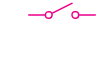
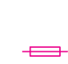
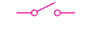

some or all of the current flows from the designed path.
Short-circuit faults can be identified because the circuit or a section of the circuit draws an unusually high current (leading to fuse blowing).
The potential difference between two points joined by a short circuit is zero or much lower than expected.
Activity 2.13 illustrate melting of fuse.
Activity 2.13

Aim:
To demonstrate the melting of a fuse
Materials:
two fuse wires 3 A, 3 size-D dry cells, rheostat, ammeter (0 – 5 A), two 2.5 V torch bulbs with bulb holders, connecting wires, switch, crocodile clips
Procedure
1.
Connect the apparatus to make a circuit as shown in Figure 2.45.
E


Figure 2.45
2.
Start with the rheostat set at maximum resistance.
3.
Close the switch and adjust the rheostat to raise the current.
Observe both the ammeter and the fuse wire.
Continue adjusting until the fuse wire melts.
Open the switch.
4.
Now disconnect the rheostat from the circuit and replace it with the two 2.5 V torch bulbs, also replace the melted fuse with a new one as shown in Figure 2.46.
+

A
P
Q
Figure 2.46
5.
Close the switch and observe the ammeter reading and the brightness of the bulbs.
6.
Short-circuit the bulbs by connecting a lead wire across PQ with crocodile clips.
Observe the ammeter reading, the brightness of the bulbs and the fuse wire.
Questions
When a current in the circuit exceeds the current rating of a fuse wire, the fuse wire melts.
Putting a lead wire across PQ causes an increase in the ammeter reading.
It also causes bulbs to go off.
These two observations are an indication of a short circuit.
The lead wire across PQ is an unwanted connection which diverts current through a different path.
The lead
03/04/2026 14:19